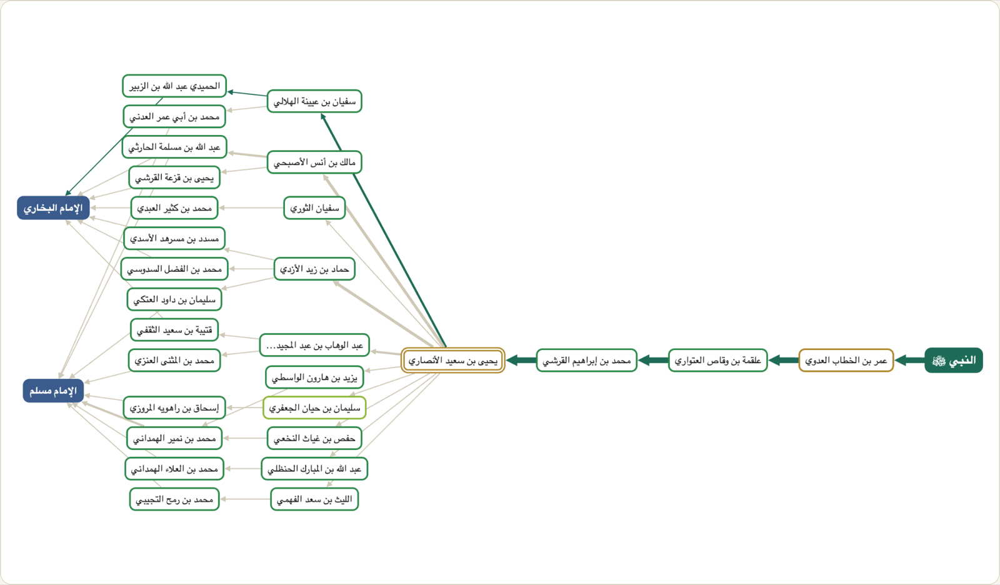
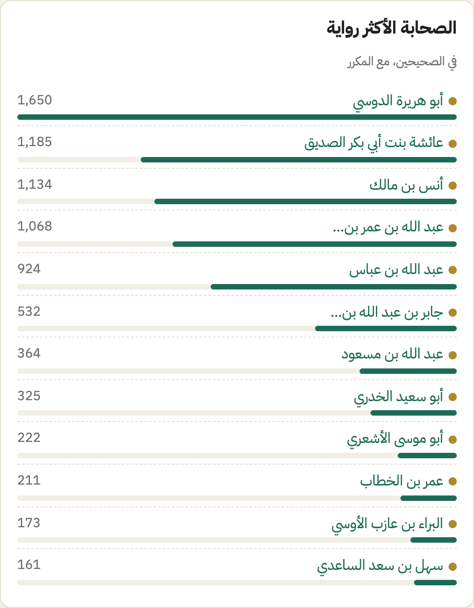

🌳
شجرة الرواة
لكل حديث شجرة تفاعلية من النبي ﷺ إلى أصحاب الكتب التسعة، تجمع كل طرقه فيها.
اعرف كيف وصلك الحديث النبوي:
رواته، وطرقه، ومداره، ومراتب رجاله عند الأئمة
أداة وقفية لدراسة أسانيد الكتب التسعة: صحيح البخاري، وصحيح مسلم، وسنن أبي داود، وجامع الترمذي، وسنن النسائي، وسنن ابن ماجه، ومسند أحمد، وموطأ مالك، ومسند الدارمي. تعرض لكل حديث شجرة رواته من النبي ﷺ إلى أصحاب الكتب.
كل ما يحتاجه طالب العلم لفهم إسناد الحديث، في مكان واحد، بنقرة واحدة.
لكل حديث شجرة تفاعلية من النبي ﷺ إلى أصحاب الكتب التسعة، تجمع كل طرقه فيها.
يُظهر الراوي الذي تلتقي عنده الطرق ثم تتفرع، ويميّز المتابعات عن الشواهد.
رتبة كل راوٍ عند ابن حجر والذهبي، وطبقته ونسبه ووفاته وبلده، وشيوخه وتلاميذه في الكتب التسعة.
وصف كل إسناد بحسب رتب رجاله عند ابن حجر، مع التنبيه على من وُصف بالتدليس أو الاختلاط.
روايات الحديث في كتب السنة وشواهده عن صحابة آخرين، بحسب تخريج برنامج جامع خادم الحرمين الشريفين.
الأكثر رواية، وأشهر الأسانيد، وأكثر الرواة مدارًا، وثلاثيات البخاري، وغيرها.
اضغط على الصلة بين الراوي وشيخه أو تلميذه في شبكته، فتظهر لك كل الأحاديث التي جاءت بهذا الطريق في الكتب التسعة، مرتّبة ومفصّلة بحسب الكتاب. مثال: ما رواه القاسم بن محمد عن عائشة رضي الله عنها: 232 حديثًا.
رواه عمر بن الخطاب رضي الله عنه، ثم تفرّد به عنه علقمة، ثم محمد بن إبراهيم التيمي، ثم يحيى بن سعيد الأنصاري، الذي صار مدار الحديث فرواه عنه خلقٌ كثير.
كل هذا تراه في شجرة واحدة، وتضغط على أي راوٍ لتقرأ ترجمته.
افتح شجرة الحديث
من أكثر الصحابة رواية في الكتب التسعة؟ ومن أكثر شيوخ أصحابها؟ وما أشهر إسناد تكرّر فيها؟

ابحث بكلمة من المتن أو باسم راوٍ، أو تصفّح الكتب التسعة بكتبها وأبوابها.
اقرأ النص بأسماء رواته الملوّنة، وأسانيده وأحكامها، ورواياته الأخرى.
تتبّع الطرق، واعرف المدار، واضغط على أي راوٍ لتنتقل إلى ترجمته وشبكته.
مجانًا · بلا إعلانات · بلا تسجيل
للاقتراحات أو الإبلاغ عن خطأ: zuhair.nammous@gmail.com